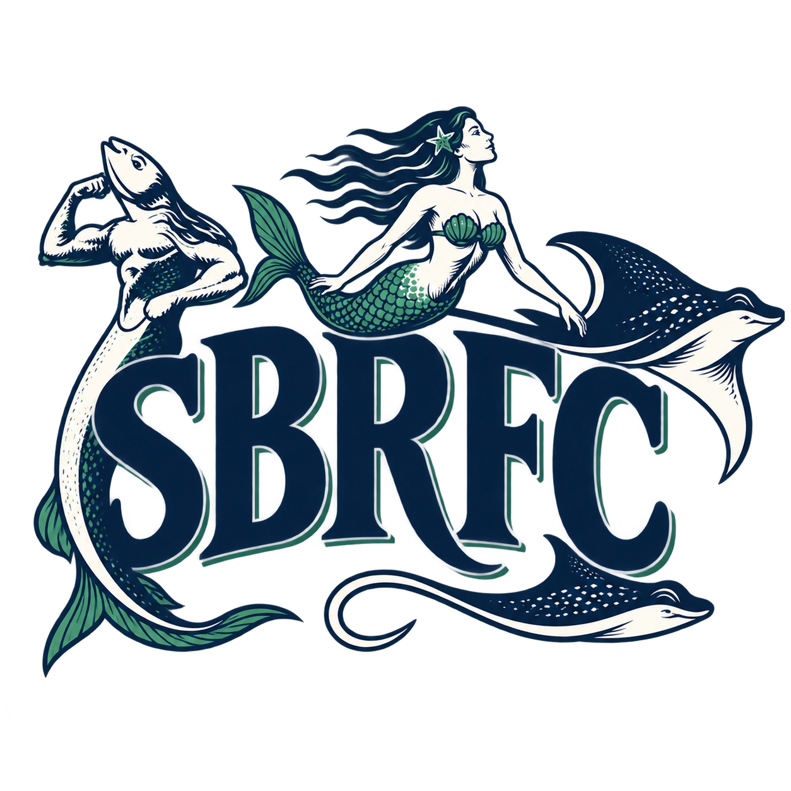
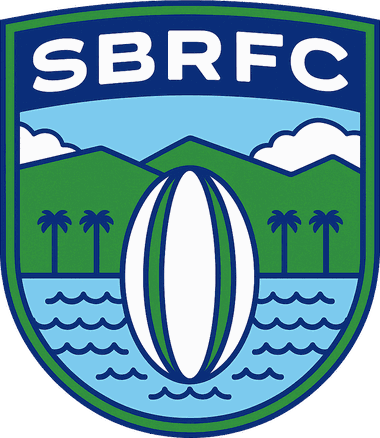

Welcome to SBRFC (Santa Barbara Rugby Football Club), the 501(c)3 non-profit for the promotion, encouragement, and extension of Rugby Union football in Santa Barbara County.

The mission of the Santa Barbara Rugby Football Club is to promote the sport of rugby in our community by fostering athletic excellence, inclusivity, and personal development through teamwork, discipline, and sportsmanship. As a 501(c)(3) non-profit organization, we are committed to providing opportunities for youth and adults of all backgrounds to participate in and learn the game of rugby, supporting physical health, leadership, and lifelong community engagement.